Kokend water.
Gebruik vers water en laat het goed koken. Zwarte thee heeft hitte nodig om haar volle smaak los te laten.
Windermere is stevige, volle zwarte thee voor wie zijn dag klassiek begint. Sterk genoeg voor melk, rond genoeg voor elke ochtend.
Vol·Moutig·Sterk genoeg voor melk
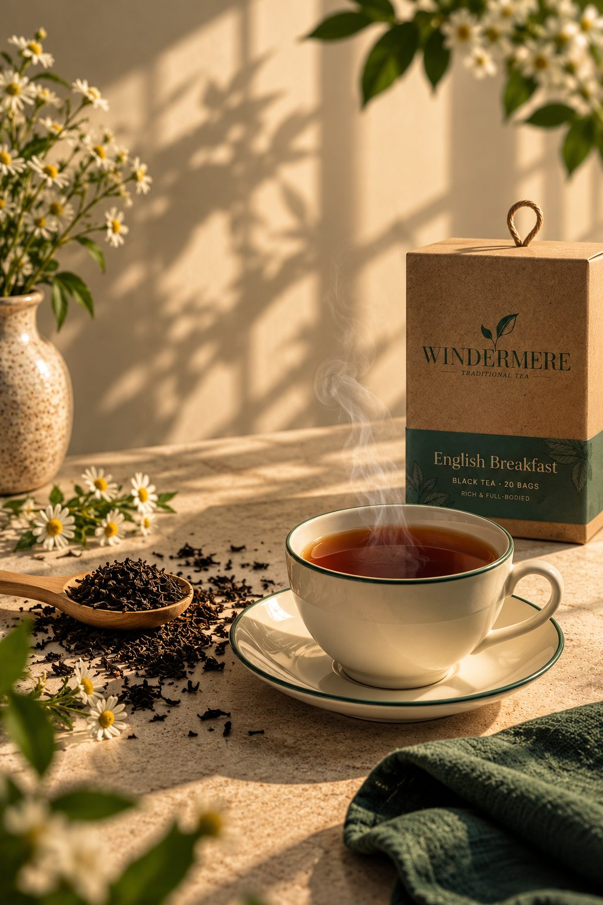
Windermere is ontstaan uit een eenvoudige overtuiging: de eerste kop van de dag moet kracht hebben. Daarom kozen we voor een klassieke English Breakfast-blend, vol en moutig, sterk genoeg voor melk.
Geen lichte of fruitige varianten, maar een thee met karakter, voor wie houdt van traditie en een vertrouwde smaak.
Een diepe, ronde smaak die blijft hangen.
Warme tonen van zuivere zwarte thee.
Sterk genoeg voor melk, elke ochtend opnieuw.
Zwarte thee in een eenvoudige kraftdoos met een groene band. Twintig zakjes, elk goed voor een volle kop. Beweeg over de doos om haar van dichtbij te bekijken.
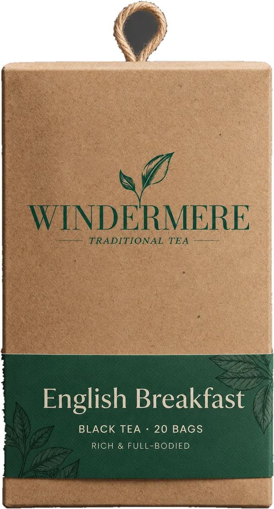
Een goede kop begint bij kokend water, vier minuten trekken en een scheutje melk. Meer is er niet nodig.
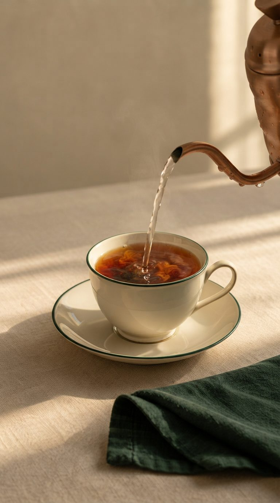
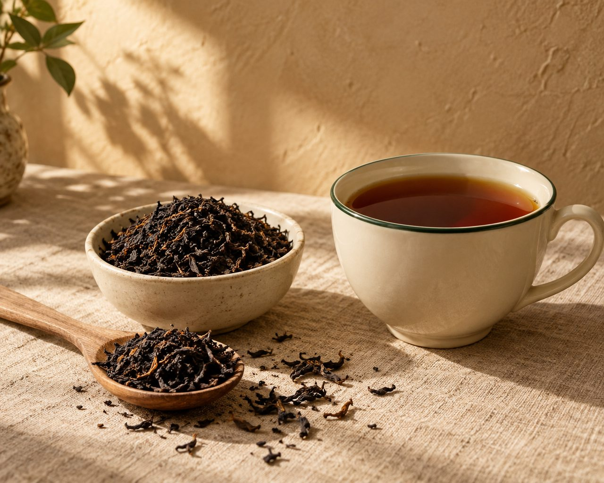
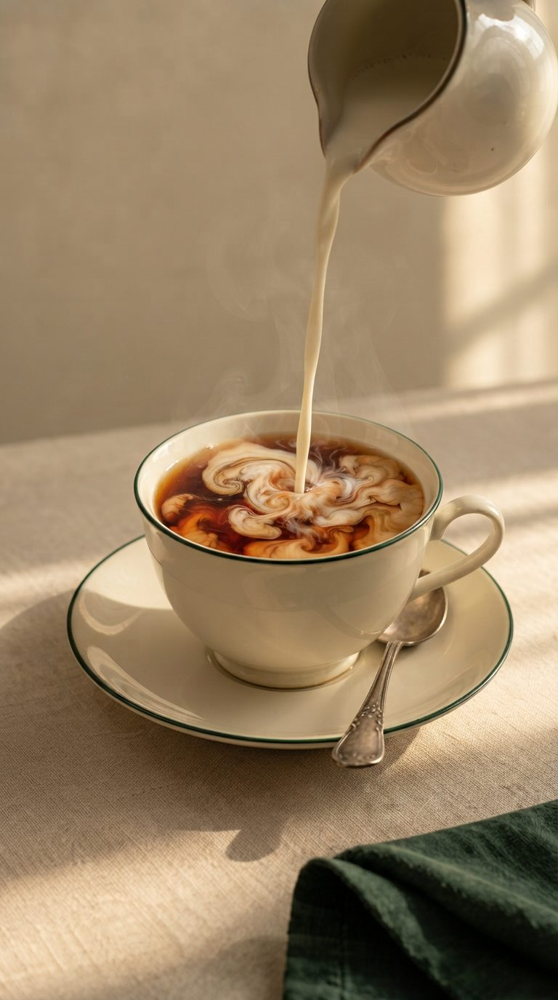
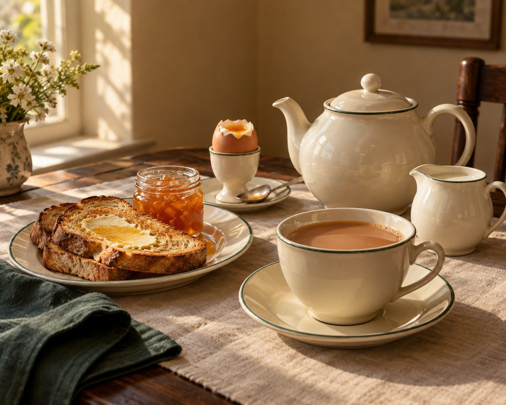
Gebruik vers water en laat het goed koken. Zwarte thee heeft hitte nodig om haar volle smaak los te laten.
Niet korter, niet veel langer. Zo krijgt u een diepe amberkleur en een ronde, moutige smaak.
Windermere is sterk genoeg voor melk. Voeg naar smaak toe; de thee houdt haar karakter.
Toast, een eitje, de krant. De eerste kop van de dag is een moment voor uzelf.
Schuif de trektijd en kies of u melk neemt. Zo ziet u hoe Windermere kleur krijgt. Klaar om te zetten? Start de timer.
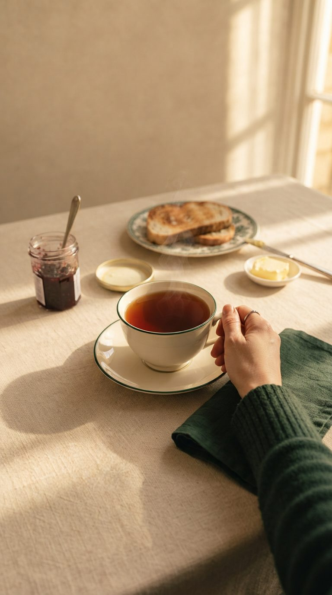
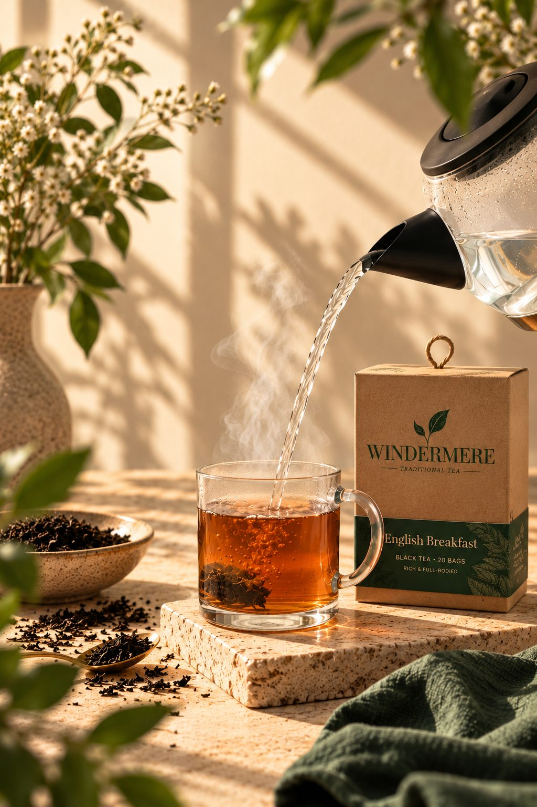
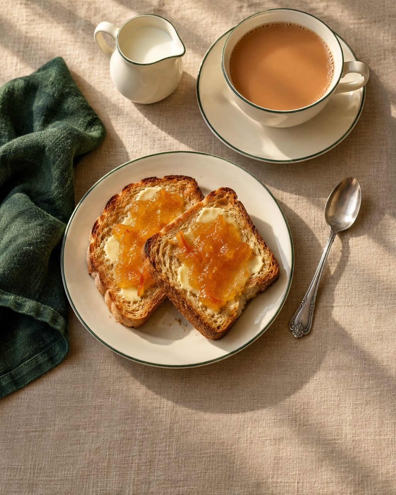
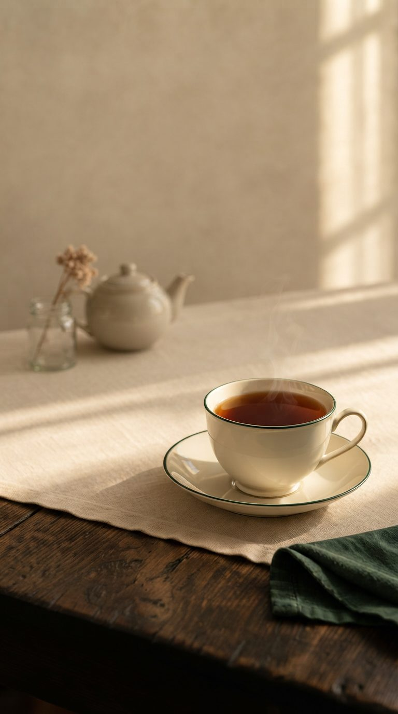
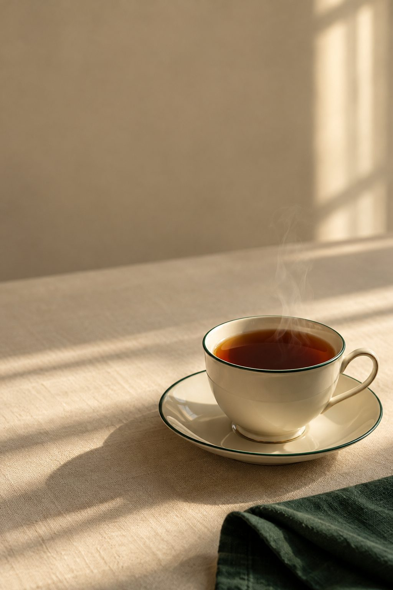
Eerst thee. Dan de rest.
Windermere · Traditional tea
Windermere komt binnenkort. Schrijf u in en ontvang als eerste nieuws over de lancering.
Uw gegevens worden alleen gebruikt voor de nieuwsbrief van Windermere en nooit gedeeld met derden. U kunt zich op elk moment uitschrijven.